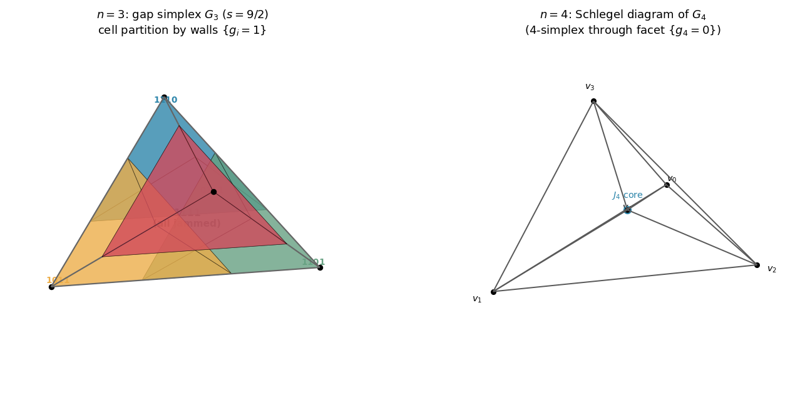
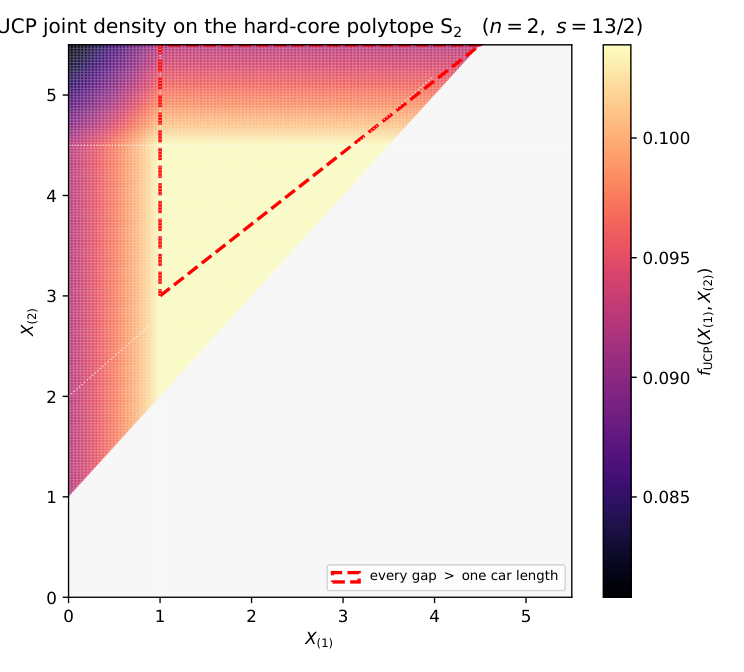

Exact Finite-Length Theory of Uniform Car Parking: Spatial Laws, Absorption, and Aggregation
The uniform car-parking process (one-dimensional random sequential adsorption of unit cars on a segment of length s) lacked an exact finite-length theory of the joint law of parked positions, gap statistics, and the absorption count.
The joint density of the order statistics is written as a sum over arrival orders of products of reciprocal free lengths. It is decomposed into jamming cells indexed by bitstrings, on each of which it is a rational function, and evaluated by a subset recursion in O(2^n n) operations. Marginals are obtained as hyperlogarithms, and the absorption count is treated through Rényi's integral equation. Structural claims are machine-checked in Lean 4 against Mathlib, with external theorems carried as explicit hypotheses and axiom footprints audited.

The paper gives closed-form cell counts and feasibility criteria, a weight bound of n-1 on the hyperlogarithmic marginals, moment recursions and support of the absorption count, asymptotic limit laws, and jamming-graph invariants. About 555 Lean declarations verify the core combinatorial and measure-theoretic results, and the exact forms are cross-validated by Monte Carlo simulation.
